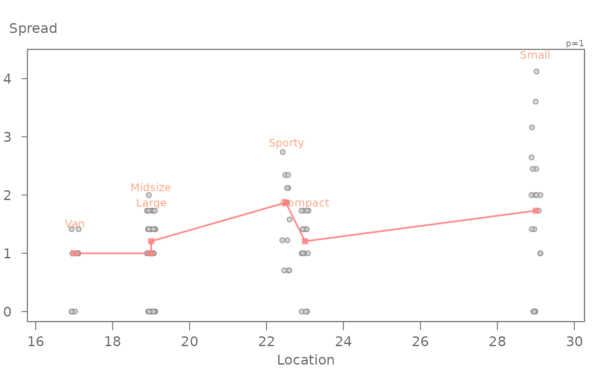
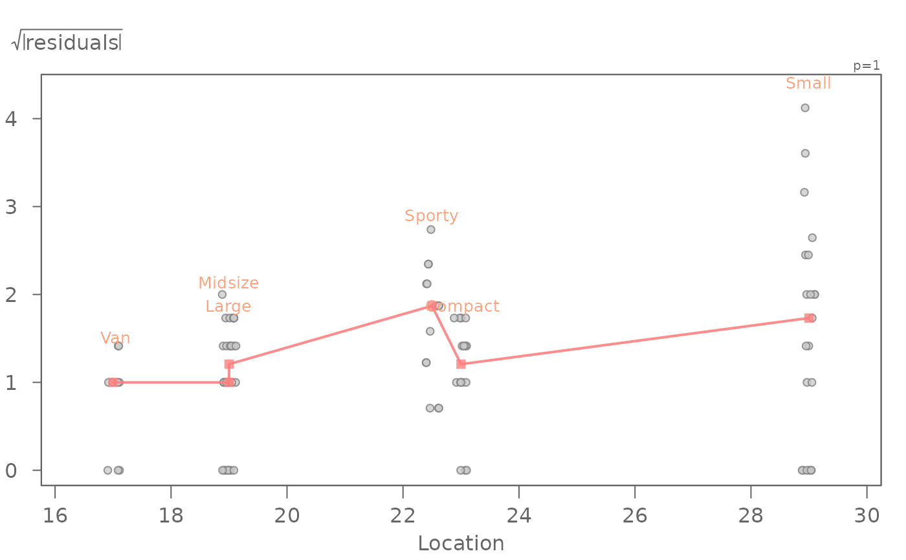

The eda_sl function generates a spread-level table from a
univariate dataset.
Usage
eda_sl(
dat,
x,
fac,
p = 1,
tukey = FALSE,
sprd = "frth",
plot = TRUE,
grey = 0.6,
pch = 21,
p.col = "grey50",
p.fill = "grey80",
size = 1,
alpha = 0.8
)Arguments
- dat
Dataframe
- x
Continuous variable column
- fac
Categorical variable column
- p
Power transformation to apply to variable
- tukey
Boolean determining if a Tukey transformation should be adopted (FALSE adopts a Box-Cox transformation)
- sprd
Choice of spreads. Either interquartile,
sprd = "IQR"or fourth-spread,sprd = "frth"(default).- plot
Boolean determining if plot should be generated.
- grey
Grey level to apply to plot elements (0 to 1 with 1 = black).
- pch
Point symbol type.
- p.col
Color for point symbol.
- p.fill
Point fill color passed to
bg(Only used forpchranging from 21-25).- size
Point size (0-1)
- alpha
Point transparency (0 = transparent, 1 = opaque). Only applicable if
rgb()is not used to define point colors.
Details
Note that this function is not to be confused with William Cleveland's spread-location function.
If
facis not categorical, the output will produce many or all NA's.On page 59, Hoaglan et. al define the fourth-spread as the the range defined by the upper fourth and lower fourth. The
eda_lsumfunction is used to compute the upper/lower fourths.
References
Understanding Robust and Exploratory Data Analysis, Hoaglin, David C., Frederick Mosteller, and John W. Tukey, 1983.
Examples
dat <- read.csv("http://mgimond.github.io/ES218/Data/Food_web.csv")
sl <- eda_sl(dat, mean.length, dimension)

# The output can be passed to a model fitting function like eda_lm
# The output slope can be used to help identify a power transformation
eda_lm(sl, Level, Spread)

#> int Level^1
#> -2.969986 2.979117